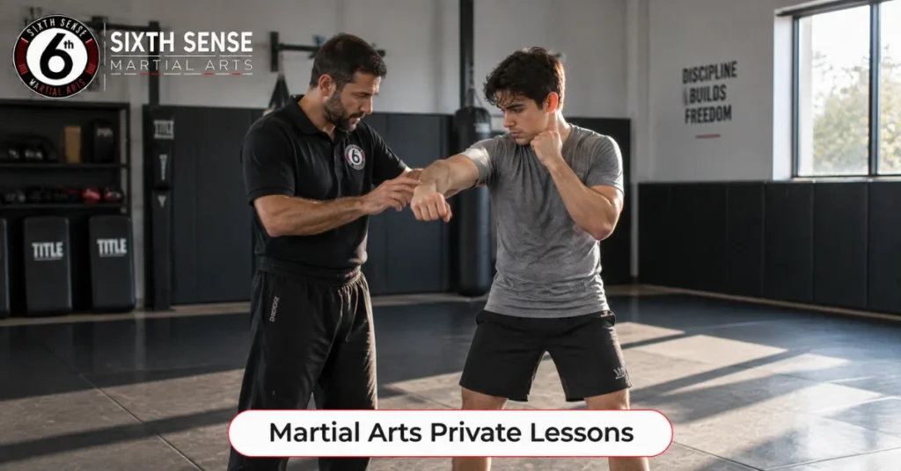
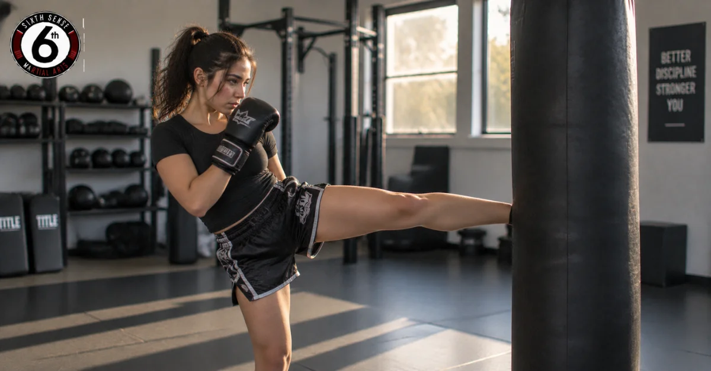
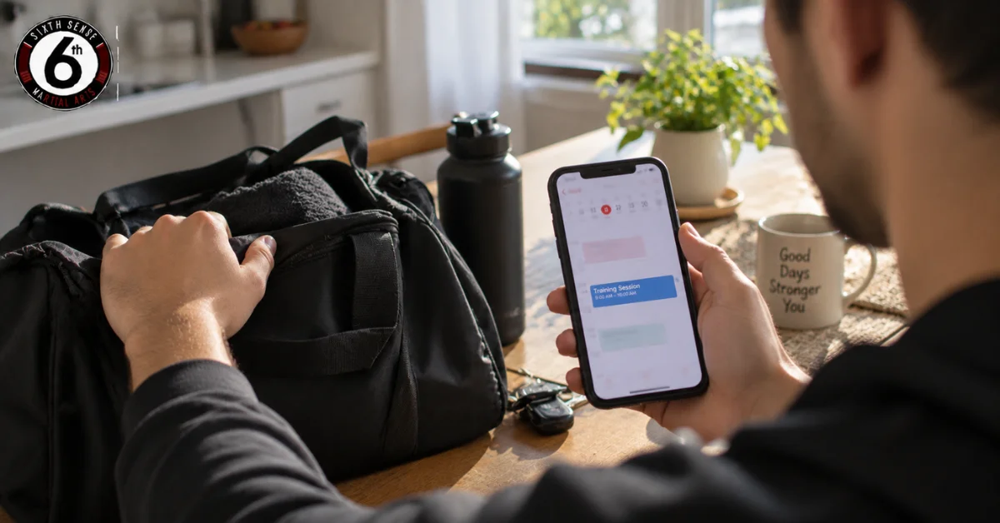

Martial Arts Private Lessons Are They Worth It for Your Goals

Martial Arts Private Lessons Explained
At some point in your training you will probably see private lessons listed on your gym’s schedule and wonder if they are actually worth the extra cost. Martial arts private lessons come with a real price tag attached and that makes people naturally cautious before committing. At Sixth Sense Martial Arts in Coppell TX we get this question regularly from students who are progressing well in group classes but curious if individual coaching would speed things up even more. So instead of giving you a sales pitch this guide will walk through the honest pros cons and real value of private coaching so you can decide for yourself if it fits your goals and your budget.
What Happens in Martial Arts Private Lessons
Unlike a group class where the instructor is managing ten or more students at once martial arts private lessons give you their undivided attention for the entire session. The coach can watch every single rep you throw and correct small details that would otherwise go unnoticed in a crowded room. As a result the pace and content of the lesson gets built entirely around what you specifically need to work on that day. Moreover there is no waiting your turn to drill with a partner or sharing mat time with anyone else. The whole hour belongs to you and your specific goals whether that means fixing a stubborn technical flaw or preparing for an upcoming competition. This level of focused attention simply cannot happen in a typical group setting.
Martial Arts Private Lessons Cost
Let us talk numbers because that is usually the first question people have. Private one on one martial arts training sessions typically range anywhere from 50 to 200 dollars per hour depending on the instructor’s experience and location. This is noticeably more expensive than a monthly group class membership which usually runs between 125 and 250 dollars for unlimited sessions. However many gyms including Sixth Sense offer flexible options such as booking a single lesson occasionally rather than committing to a weekly private schedule. As a result even booking one or two private sessions a month can be a smart cost effective strategy rather than an all or nothing decision. The key is understanding that private lessons are meant to supplement your regular training not replace it entirely.
Who Needs Martial Arts Private Lessons
Martial arts private lessons are not just for advanced competitors chasing a championship title. Complete beginners often benefit tremendously because one on one instruction helps them build correct fundamentals from day one without picking up bad habits. Meanwhile intermediate students preparing for a belt promotion can use private time to sharpen the exact skills their instructor wants to see demonstrated. Furthermore competitors preparing for an upcoming tournament often book focused sessions to drill specific game plans against their coach. Similarly adults with limited flexibility in their schedule sometimes prefer private lessons simply because they can book a time that actually works for their busy life. In short private coaching adapts to whoever is paying for it which makes it valuable across every skill level.
Martial Arts Private Lessons and Faster Progress
One of the biggest advantages of martial arts private lessons is the speed at which technical corrections happen. In a group class an instructor might notice a flaw in your technique but only have thirty seconds to address it before moving to the next student. However during a private session the coach can stop you mid movement explain exactly what is happening and have you repeat it immediately until it clicks. As a result flaws that might take months to fix in group settings often get corrected within a single private session. Moreover this rapid feedback loop means every rep you throw afterward reinforces the correct version of the technique rather than repeating the same mistake over and over without realizing it.
Martial Arts Private Lessons and Confidence
Beyond pure technique martial arts private lessons offer something less tangible but equally valuable which is confidence built through personalized attention. Individual coaching removes a lot of that pressure. Many students feel intimidated asking questions in a crowded class or worry about looking foolish in front of their peers. However a private setting removes that pressure entirely which creates space for genuine curiosity and experimentation. As a result students often try techniques they would normally hesitate to attempt in front of others. Furthermore mastering a skill at your own pace without comparison to classmates builds a quieter more authentic form of self assurance. Consequently many students report feeling noticeably more confident stepping back into group classes after even just a few private sessions because they finally understand the why behind the movements they were previously just copying.

Martial Arts Private Lessons and Scheduling
Life gets busy and not everyone can make it to the gym during regular class hours. This is where martial arts private lessons offer a practical solution that group classes simply cannot match. Because private sessions are booked directly with an instructor they can often be scheduled early in the morning late in the evening or on days when the regular schedule does not fit your life. Moreover this flexibility makes training accessible to people with demanding jobs unpredictable travel schedules or family obligations that conflict with set class times. As a result private lessons become less of a luxury and more of a practical necessity for certain students who would otherwise struggle to train consistently at all.
Martial Arts Private Lessons for Competition
If you have a belt test or a tournament coming up martial arts private lessons can make a significant difference in how prepared you feel. Instructors can use this dedicated time and personalized attention to simulate exactly what you will face during testing or competition rather than following a general lesson plan designed for the whole class. Furthermore coaches can identify specific weaknesses in your game plan and drill solutions repeatedly until they become second nature under pressure. In addition this focused preparation often reduces pre competition anxiety because you walk in knowing you have specifically trained for the exact scenarios you are likely to encounter. Many competitors describe these targeted sessions as the difference between feeling nervous and feeling genuinely ready when it matters most, and the skill development gained often carries well beyond the event itself.
Are Martial Arts Private Lessons Necessary
Here is the honest truth. Not every student needs private lessons to progress and improve. Many practitioners train for years using only group classes and become highly skilled through consistent attendance and dedicated practice. However martial arts private lessons become particularly valuable when you hit a specific plateau or need targeted help with one persistent problem. Moreover if your goal is purely recreational fitness or general skill building group classes alone are often more than sufficient. On the other hand if you are chasing a specific milestone like competition readiness or an upcoming promotion the accelerated progress from private coaching may genuinely be worth the investment. The decision ultimately depends on your personal goals timeline and budget.
Getting the Most From Private Lessons
If you decide to book martial arts private lessons there are a few things you can do to maximize the value of your time. Walking in with a specific goal or question in mind helps the instructor focus the session efficiently rather than guessing what you need. Moreover taking notes or recording certain drills afterward helps reinforce what you learned once you leave the gym. Furthermore following up what you practiced privately with reps during your next group class solidifies the correction into muscle memory. In addition being honest with your instructor about your struggles even the embarrassing ones ensures they address your actual weaknesses rather than surface level issues. The more intentional you are with your private time the more return you will get on your investment.
Martial Arts Private Lessons Plus Group Classes
The most effective approach for most students is not choosing between private lessons and group classes but combining both strategically. Group classes provide the community accountability and consistent repetition needed to build a strong foundation over time. Meanwhile martial arts private lessons supplement that foundation by addressing specific gaps or accelerating progress on particular goals. As a result students who occasionally book private sessions alongside their regular group attendance tend to see noticeably faster overall improvement than those who rely on just one training format. Furthermore this combination approach also tends to be more financially sustainable than switching to private lessons exclusively which can quickly become expensive for most budgets.
Booking Your First Martial Arts Private Lesson
Booking your first martial arts private lesson at Sixth Sense is a simple and welcoming process. You will start by discussing your goals and any specific concerns with your instructor before the session even begins. Subsequently the coach will design the lesson around exactly what you need whether that is fixing a technical issue building overall fundamentals or preparing for a specific event. The session typically runs about an hour and moves at whatever pace suits your learning style. There is no pressure to perform perfectly and plenty of room to ask questions you might feel hesitant to ask in a group setting. Most students leave their first private lesson surprised by how much ground they covered in such a short amount of time.

Conclusion
Martial arts private lessons are not a requirement for progress but they can be a genuinely valuable tool depending on your specific goals. From accelerated technical corrections and scheduling flexibility to focused competition preparation and confidence building one on one coaching offers real skill development advantages that group classes alone cannot fully replicate. At Sixth Sense Martial Arts in Coppell TX private sessions are available for students who want that extra edge whether you are working toward a belt promotion preparing for competition or simply chasing faster progress. The most important thing is being honest with yourself about your goals timeline and budget before deciding if this investment makes sense for your journey. Reach out to the team today to discuss whether private coaching is the right fit for you.
Contact Us
Have questions about our classes or training programs. We would love to hear from you. Reach out to us today and let us help you start your martial arts journey the right way.
Follow Us on Social Media
Stay connected with the Sixth Sense Martial Arts community. Follow us for training tips belt grading updates student highlights and exclusive offers.
FAQ’s
Prices generally range from 50 to 200 dollars per hour depending on the instructor’s experience and the gym’s location. Many students book occasional sessions rather than a regular weekly schedule to keep costs manageable.
No private lessons benefit every skill level. Beginners use them to build strong fundamentals early while intermediate and advanced students use them to fix specific weaknesses or prepare for competition and belt testing.
Most instructors recommend combining both rather than choosing one exclusively. Group classes build community and consistent repetition while private lessons address specific gaps and accelerate progress on particular goals.
There is no fixed rule and it depends on your budget and goals. Even booking one private session a month can produce noticeable improvement when combined with regular group class attendance.
Yes many students see meaningful improvement after just a single focused session because instructors can correct flaws immediately that might otherwise take months to fix in a group setting through general feedback.
Consider your specific goals and timeline. If you are working toward a promotion competition or stuck on a persistent problem private coaching often delivers strong value. For general fitness group classes alone are usually sufficient.
Train with us in Coppell
The first class is free. Shorts, a t-shirt and a water bottle. We lend the rest.
Book a free class